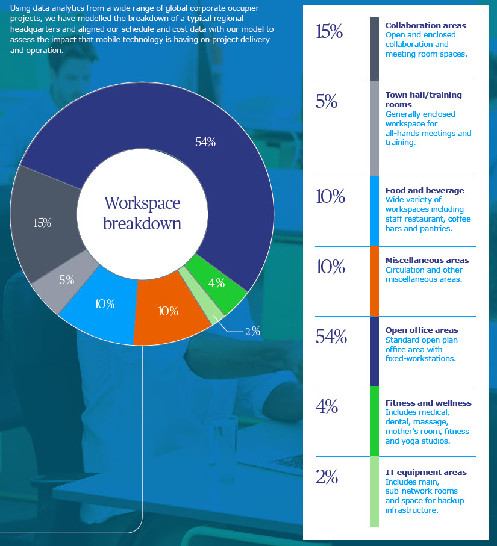

Mobile technology: Using data to understand its impact
We are frequently asked by our clients about the impact or disruption we are seeing from technology. The quick and broad answer is that technology is currently moving at a rapid pace and having a profound impact on almost every industry and sector.
Mobile Technology has changed many aspects of our daily lives and disrupted the traditional status quo in the media, mobility (taxi) and retail sectors to name but a few. It has also had a significant impact on how, where and when many of us now choose to work and has enabled us to carry out many work-related tasks from home, waiting at an airport or while picking up our morning coffee.
In the context of the workspace, mobile technology really began its journey with the introduction and rise in popularity of laptops in the late 1990’s. As laptop use supplanted the traditional fixed desktop computer, we began to migrate away from using computers at a fixed desk both at home and in the office. This migration was enabled by improving WIFI connectivity in the early 2000’s leading up to the landmark introduction and subsequent adoption of smartphones and tablet technology by 2010.
Fast forward eight years to 2018 and mobile technology has generally been adopted across the world and it has also shaken up the composition of the workspace. This has created demand for new types of space to convene, collaborate and concentrate an increasingly mobile workforce together.
Using workspace data analytics, we have developed a typical workspace composition model based on data from a wide range of office projects and assessed the impact mobile technology is having on the workspace, durations and cost.
Regional headquarters workspace breakdown model

Mobile technology’s impact on workspace
Open office
Our workspace data metrics show that mobile technology has generally reduced, across most occupier classes, the space allocated to open plan with a fixed desk. There are exceptions to this trend including specialist research and development and financial trading workspaces but we are generally seeing a reduction to a weighted average 54 percent of the total workspace with an average staff/desk ratio of 0:9.
So with a trend towards less fixed desks, a declining staff/desk ratio and mobile technology firmly embedded within the work-force, will we all be working from home, the coffee shop or even the beach in a few years and coming together through virtual mobile technology?
In the short to medium term this looks unlikely. Our workspace data also shows that while fixed-desks may be declining, there is an increasing demand for workspaces to convene the mobile workforce together with a rising demand for dedicated collaboration, town hall, food and beverage and wellness workspaces colloquially referred to throughout this article as the ‘Challenging-4’.
Collaboration spaces
As mobile technology has enabled us to move away from fixed desks, it has also enabled us to work remotely away from our work colleagues. While there are undoubtedly benefits to mobile working, it can sometimes be to the detriment of team work, brain storming and the much vaunted discussions by the water cooler. When clarifying the design brief, many of our clients emphasise the importance of dedicated workspace that promote collaboration, sharing ideas and problem solving. This has led to an increasing demand for collaboration workspace as it is generally recognised that there is a richness in face-to-face collaboration which current technology platforms, such as video conferencing, Hangouts and Webex’s are not able to fully replicate as yet.
Traditionally, the majority of collaboration was undertaken in formal, enclosed meeting room spaces of varying size and these workspaces are very good at supporting collaboration technology platforms, such as video conferencing. While enclosed meeting rooms are still very popular and comprise a high proportion of the 15 percent collaboration workspace within our model, we are also noting a strong demand to convene staff in more informal types of collaborative work settings. These are typically referred to as informal collaboration workspaces and include large open collaboration areas within the open office as well as smaller four-person huddle rooms with specialist collaboration furniture.
Informal collaboration accounts for around one-third of the total collaboration workspace area within our model and with advances in mobile technology, we see these more flexible and diverse type of workspace continue to rise in popularity.
It’s interesting to note that these spaces would previously have been classified as social or recreational space but enabled by mobile technology, are now very much viewed as a mobile workspace where many work related tasks are undertaken.
Food and beverage spaces
The linkage of mobile technology to an increasing demand for food and beverage space within the office is not an obvious link but mobile technology and excellent WIFI connections enable many work related tasks, informal collaboration and brain storming to be undertaken in a more casual environment away from the ‘noisy’ open office. Surveys show that these areas prove popular with staff and our workspace composition model show food and beverage comprising 10 percent of the total workspace. This is largely attributable to the rise in demand for more diverse types of food and beverage spaces such as micro kitchens, coffee bars as well as full production staff restaurants.
Town hall/training room spaces
We have also noted a rising demand for dedicated town hall and training spaces for our clients to convene their mobile workforce together. These workspaces come in a variety of different shapes and sizes including open and enclosed workspaces but within our data sample, all were enclosed (or cellularised) spaces with high acoustical and AV requirements. Under our workspace composition model, town hall and training areas generally comprise 5 percent of the total office space.
Fitness & wellness spaces
Similar to food and beverage, the linkage of mobile technology to a rising demand for fitness and wellness workspaces is not an obvious initial link but a number of studies have highlighted the negative impact that overuse of mobile technology can have on our sleep, stress levels and general mental health.
Mobile technology has given rise to the ‘always on’ culture where workers feel the need to respond instantly to communications outside of working hours and studies have shown that we check our smartphone up to 150 times per day across all age-groups.
Many clients now include fitness and wellness workspaces as an integral part of their office. From our workspace data, there is a wide and diverse range of fitness and wellness workspaces including massage rooms, yoga studios and fitness workspaces through to medical and dental. Based on our weighted average data, fitness and wellness workspaces typically comprise 4 percent of the total space in a regional HQ office.
IT
Finally, increased usage of mobile technology by the workforce has also increased the demand on IT loads. While the space allocated for IT is relatively small at around 2 percent (including space for power backup) within our model, it is a fundamental component of any workspace, particularly with financial clients. A regional HQ project will typically comprise a main network room, where all the IT servers are located as well as smaller sub-network rooms throughout the office. While few employees are ever permitted access to the main network room, it is sometimes referred to as the heart of the office and enables us to fully utilise mobile working. The main network room is usually powered directly from its own dedicated power source (transformer) and backed up multiple times by other independent power sources, such as a generator or UPS and cooled by its own dedicated cooling equipment, usually a CRAC unit. These areas are of critical importance to the operation of the workspace and have significant implications on the cost and schedule.
Mobile technology’s impact on durations
One of the trends identified from our workspace model is that mobile technology is taking us away from our fixed desks and allowing us to work in more diverse types of workspaces. Many of these workspaces would previously have been classified as social or recreational spaces but are now becoming an integral part of a more diverse mobile workspace.
Why are projects taking longer to design?
To answer this question, we broke our schedule data down into the individual constituent workspaces in line with our model to assess the design and construction durations of each individual space. This ‘micro’ schedule analysis allows us to assess the impact on duration from varying the footprint (m2) of different workspaces and to identify which workspaces take longer to design and why.
The ‘Challenging-4’ including: 1) town hall, 2) enclosed collaboration with audio-visual or video conferencing, 3) food and beverage and 4) fitness and wellness workspaces were found to have a significant impact on project durations. A qualitative analysis of our schedule data shows that the primary driver is the additional time required for design coordination with specialist design disciplines including audio-visual, acoustic, lighting, structural, kitchen and wellness designers. These design packages are typically undertaken by specialist designers (i.e. not the lead ID or MEP designer) but they all need to be fully coordinated with the base design.
This design coordination is typically undertaken by the lead ID designer and is critical for design excellence and buildability. Mockups were identified as a very good way to test the design prior to construction and can also save significant time and improve quality during construction. We must stress that these are ‘Grade-A’ workspaces typically found in a global corporates regional headquarters but our schedule data shows they can, in many instances, add up to 20 percent-30 percent (weeks) to the design schedule under a traditional procurement approach.
Why are workspace projects taking longer to construct?
Firstly, our construction schedule data shows that design coordination is time or money well spent as we noted a trend for Extension of Time claims and a requirement for Day-2 works (works after completion) in the ‘Challenging-4’ workspaces.
We also noted that where there is a high wall-to-floor ratio (i.e. workspace enclosed by internal walls), the construction and testing and commissioning durations significantly increase. While additional time for installing walls, doors, supplementary air treatment and specialist lighting is obvious, we noted that the time required for IT cabling, video conferencing equipment and overall testing and commissioning of the enclosed workspace also drives a noticeable increase in construction durations. However, where the workspace design is more ‘Open’ in concept, the construction duration is generally quicker and there is a noticeable reduction in extension of time claims by general contractors and direct suppliers.
Perhaps the two biggest offenders increasing construction durations are food and beverage and fitness and wellness workspaces. Depending on the scale of these workspaces, we have found on many projects that it’s the time required to install the supporting infrastructure, such as supplementary HVAC, additional incoming water, structural reinforcements and gas which significantly drive an increase in construction durations. Coordination with specialist kitchen contractors and wellness vendors was also noted as a major risk to schedule overrun and a key takeaway is to ensure these requirements are adequately defined in the tender documents. It’s important to also mention the importance of IT installation works to construction durations. The main network room is typically handed over to the client before completion and is a true critical path activity which is difficult to mitigate if missed. One of the key takeaways from a qualitative analysis of our schedule data is to ensure that sufficient float is allowed in the schedule for testing and commissioning of the main network room prior to handover as there were many instances where the network room handover was rejected due to pending or failed tests.
Mobile Technology’s impact on cost
Why are projects becoming more expensive to design?
Finally, we move on to cost. A key theme that emerges from our cost data is that as the workspace has become more flexible and diverse through mobile technology, it has also become more expensive to deliver in both the design and construction stages.
Why are projects becoming more expensive to design?
In many ways this is a simple question to answer and was discussed under durations. Our cost data shows that the increase in design costs is largely attributable to the requirement for additional design disciplines which are largely focused in designing the ‘Chellenging-4’ workspaces including acoustic, audio-visual, lighting, kitchen and fitness and wellness designers. Under our workspace model, design costs which are largely driven by project team costs (including these additional disciplines) equate to on average 16 percent of total project costs.
And to construct?
To answer this question we again broke our data down into the individual constituent workspaces in line with our model. A key theme that emerged from this ‘micro’ cost analysis is that as more flexible types of workspace rise in popularity, construction costs increase but at a disproportionately higher rate to the increase in their area (m2).
For example, if we undertake a simple regression analysis on the ‘Challenging-4’ workspaces, we can see that increasing the footprint (m2) of these workspaces at the expense of fixed-desk open office areas, disproportionately increases construction costs as they are generally more expensive to construct than open offices.
Breaking the ‘Challenging-4’ down, we again note that enclosing workspaces (or cellularisation) drives a significant increase in the cost of town hall and collaboration workspaces. The majority of projects within our model had a high wall-to-floor ratio with expensive door and glazing systems, wall finishes incorporating high acoustical properties and upgrades to the HVAC accounting for a significant increase in costs compared to designs which are more open in concept.
We also found that high utilisation of IT and AV equipment in these workspaces, particularly video conferencing equipment, significantly drives up costs. Upon a qualitative review of our cost data, we also identified a number of cost ‘abnormals’, such as power upgrades which were required where there is high IT and AV utilisation. Another key takeaway from this is to negotiate power upgrades with landlords in advance during the technical due diligence stage to understand the cost implications and lead time.
Our cost data varied significantly for food and beverage and wellness workspaces depending on their scale. Aside from the time related costs discussed under durations, mechanical and electrical costs stand out as significantly higher in these workspaces as well as increased costs for furniture, fixtures and equipment and specialist kitchen and wellness equipment.
Perhaps now is a good point to bring some balance back to the discussion and highlight why many clients choose to invest in more diverse types of workspace. Food and beverage provides a good example as they primarily provide a diverse and flexible mobile workspace where many work related tasks can be undertaken. However, clients also highlight the staff productivity gains these workspaces can provide. For example, let’s say having sufficient number and quality food and beverage workspaces saves 50 percent of the workers in a 2,000 headcount office a 30-min trip per day to an external coffee shop in the basement. This equates to 1000 hours lost productivity per day or approximately 27,500 lost productivity days per year. Multiply this over a five-year period and the time and cost of building an food and beverage workspace in a regional headquarters building becomes insignificant.
Reduced operating costs is a recurring theme when we formalise the design brief with our clients and another key takeaway is that the initial time and capital costs are offset many times over by reduced operational expenditure and improved staff retention from building these more flexible mobile workspaces. Another good example is town hall and training workspaces for clients to convene their mobile workforce together. Without this type of workspace, clients are reliant on third party providers, such as hotels or flexible workspace providers. Our global corporate clients place significant importance on having these type of workspaces to regularly convene, communicate and train their increasingly mobile workforce together as well as having control over security, IT and the functional performance of the space. Our opex cost data shows that provided these workspaces are used as little as twice a month, the payback can be as little as two-years from not having to pay third party providers and associated travel costs.
Given its importance to the 24/7 continual operation of any office we will end our discussion with IT. As previously discussed, ensuring uninterrupted operation of the IT network is sacrosanct for any global corporate. Building in sufficient levels of power and cooling redundancy is seen as a necessary investment by many clients. The final key takeaway from our opex cost data is that when sizing equipment, safety factors can be overemphasised at the design stage leading to an oversizing of backup equipment. When power readings are taken on actual usage during operation, the power back-up equipment was found to be significantly oversized leading to unnecessary increases in capital costs.